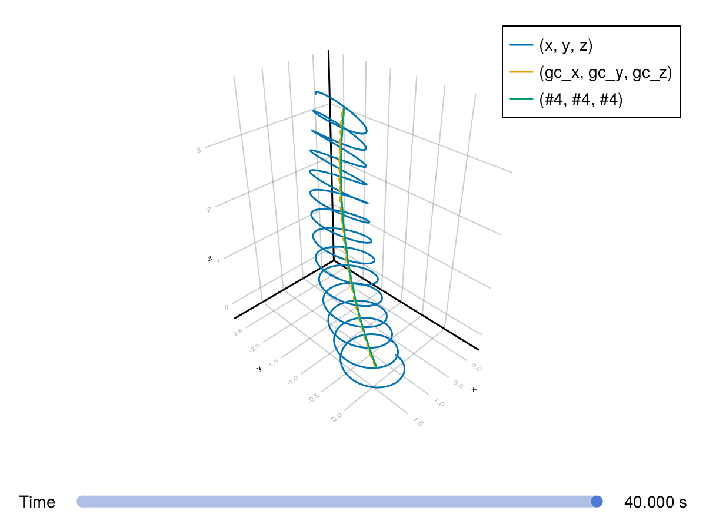

Curl-B drift


This example demonstrates a single proton motion under a vacuum non-uniform B field with gradient and curvature. Similar to the magnetic field gradient drift, analytic calculation should include both of the gradient drift and the curvature drift. More theoretical details can be found in Curvature Drift and Computational Plasma Physics by Toshi Tajima.
using TestParticle
using TestParticle: get_gc
using OrdinaryDiffEq
using StaticArrays
using LinearAlgebra
using ForwardDiff: gradient, jacobian
using CairoMakie
CairoMakie.activate!(type = "png")
function curved_B(x)
# satisify ∇⋅B=0
# B_θ = 1/r => ∂B_θ/∂θ = 0
θ = atan(x[3]/(x[1]+3))
r = hypot(x[1]+3, x[3])
return SA[-1e-7*sin(θ)/r, 0, 1e-7*cos(θ)/r]
end
function zero_E(x)
return SA[0, 0, 0]
end
abs_B(x) = norm(curved_B(x)) # |B|
# trace the orbit of the guiding center
function trace_gc!(dx, x, p, t)
q2m, E, B, sol = p
xu = sol(t)
gradient_B = gradient(abs_B, x) # ∇|B|
Bv = B(x)
b = normalize(Bv)
v_par = (xu[4:6]⋅b).*b # (v⋅b)b
v_perp = xu[4:6] - v_par
Ω = q2m*norm(Bv)
κ = jacobian(B, x)*Bv # B⋅∇B
# v⟂^2*(B×∇|B|)/(2*Ω*B^2) + v∥^2*(B×(B⋅∇B))/(Ω*B^3) + (E×B)/B^2 + v∥
dx[1:3] = norm(v_perp)^2*(Bv×gradient_B)/(2*Ω*norm(Bv)^2) +
norm(v_par)^2*(Bv×κ)/Ω/norm(Bv)^3 + (E(x)×Bv)/norm(Bv)^2 + v_par
end
x0 = [1.0, 0, 0]
v0 = [0.0, 1.0, 0.1]
stateinit = [x0..., v0...]
tspan = (0, 40)
# E×B drift
param = prepare(zero_E, curved_B, species=Proton)
prob = ODEProblem(trace!, stateinit, tspan, param)
sol = solve(prob, Vern9())
gc = get_gc(param)
gc_x0 = [gc_i(stateinit) for gc_i in gc]
prob_gc = ODEProblem(trace_gc!, gc_x0, tspan, (param..., sol))
sol_gc = solve(prob_gc, Tsit5(); save_idxs=[1,2,3])
gc_analytic = Tuple(xu -> getindex(sol_gc(xu[7]), i) for i = 1:3)
# numeric result and analytic result
f = orbit(sol, vars=[(1, 2, 3), gc, gc_analytic])

This page was generated using DemoCards.jl and Literate.jl.